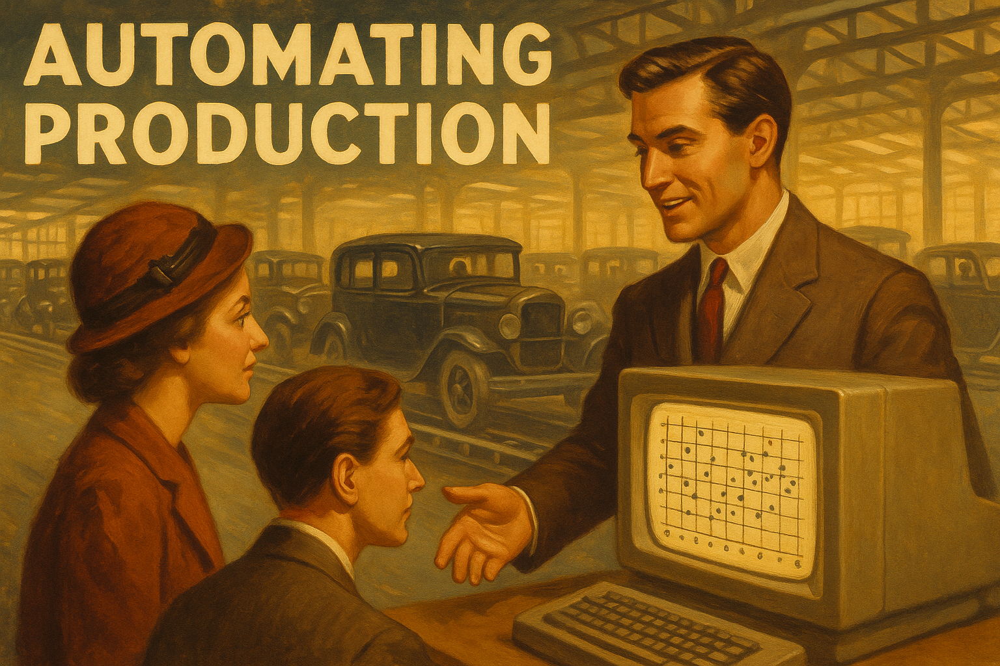

Week 06: Sentiment Analysis with AI
Using API to AI to create data from text
Week 06: Sentiment Analysis with AI
Using API to AI to create data from text

Overview
Continue using text for research with AI. [SUGGESTED ADDITION] Scaling text analysis with APIs: from 20 texts to 10,000+ and understanding the economics of when manual analysis becomes infeasible.
Learning Outcomes
By the end of the session, students will:
- Gain hands-on experience with sentiment analysis.
- Have experience integrating NLP in research
- Think about what is ground truth
- Get a taste of building an analytical pipeline with API usage
Preparation / Before Class
🔧 API Setup
API Access Setup:
- How to get AI API keys (OpenAI ChatGPT and Anthropic Claude)
- Budget: ~$5 minimum for course exercises
API Learning Resources:
- Introduction to APIs - fundamental concepts
- Advanced API knowledge - how APIs work under the hood
📊 Preparation
Materials from Moodle/Course Repository:
- Combined interview dataset (text_id level)
- Game information with results (win/draw/loss encoding)
- Combined student ratings from Week 5 assignments (aggregated, anonymized)
- Domain lexicon ratings
Data Structure:
- texts: Individual interview transcripts with metadata
- games: Match results and context information (soccer has 3 outcomes: win, draw, loss – impcation for result encoding)
- ratings: Human ratings, AI ratings, lexicon scores by text_id
Code Examples Available:
text and prompts
Other
- More advanced knowledge on APIs – how APIs work
Review
💬 Assignment 5 Discussion (20 min)
Review of transformation options
- lexicon based counting numbers –> generate a transparent script
- Machine-learning classifiers, n-grams etc.
- LLM (transformer-based) one-shot: treating the LLM like a giant classifier: you hand it raw text and ask classes of sentiment. (Deep contextual understanding—word embeddings, attention across the whole sentence etc decide the sentiment.) No separate sentiment lexicon; it’s all encoded in the model weights.
- You can also take a pretrained LLM and continue training it on thousands of labeled review. See our example guidelines HERE
Sharing Experiences:
- Human vs. AI rating differences: Where did you disagree most?
- Rating challenges: What aspects of manager interviews were hardest to classify?
- Consistency issues: Did you rate similar texts consistently? Did AI? Was there a consistent gap?
- Domain knowledge impact: How much did football expertise affect your ratings?
Class Material
🔍 API Walkthrough Sessions (30 min)
Introduction
Beginner-Friendly Examples:
- Simple walkthrough with GDP data – uses World Bank and FRED APIs
- Bit harder walkthrough with football data – uses FBREF soccer data. Guess the club for example.
More advanced stuff
- More advanced knowledge on APIs – how APIs work
📈 Data Analysis Workshop (30 min)
Data Integration Task:
- Take the aggregated file and ask AI for a readme. Discuss what is in the data
- Compare human, domain lexicon and AI rating. For human and AI take the average.
- Think of an interesting comparison using AI rating
- Compare results by human and lexicon rating
Discussion 2
- What is ground truth
How to integrate AI into research
- combine data with text
- think RQ and how you’d use AI
🎯 Advanced Applications (20 min)
Additional tasks if time permits
Predict gender and result
Note: Men’s teams have male managers, women’s teams have female managers in this dataset
- Show AI all texts and ask to predict the gender of speaker
- Show AI all texts and ask to predict the result (manager’s team won, drew, lost)
Discussion:
What linguistic cues might reveal gender? Are these reliable?
End of Week Discussion points
- Ground Truth Problem: In sentiment analysis, what constitutes the “correct” answer? How do we validate when humans disagree?
- API Integration: What are the benefits and costs (risks) of using API to scale text analysis?
Assignment
Due: Optional extension exercise
Create a similar pipeline for predicting manager gender from interview text, including AI explanations of classification decisions.
Some personal comments on AI and this class
- AI helped writing the Python code and translating to R. But it needed a great deal of debugging: working with tests and building stable pipelines are hard.